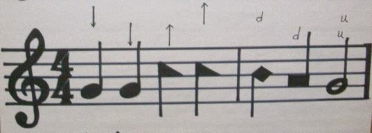

(Note: this is a slightly edited version of a note by Tom Malone on the Fasola Discussion list in a thread about "leading slowly in two.")
I was born and raised in Vermont, and learned to sing Sacred Harp both there and in Massachusetts, so I can represent, for the sake of this discussion, a typical “Northern Singer”.
I think we can all agree that because of where I first learned to sing and beat time, my initial learning could hardly be considered traditional.
Then, four years ago, I went to Camp.
This was the first year that Hugh McGraw taught rudiments classes for both youth and adults.
Here I heard him say a phrase that he uses in all of his singing schools, “We have seven modes of time, three of common, two of triple, and two of compound.”
In that moment, I quickly realized that I needed to set aside my previous training and “become a beginner” because I, and many other “northern singers” who had not sat in singing school before—- didn’t even know what a “mode of time” was!
We, “in the North,” tend to think of songs as being “in two”, “in three”, or even “in four” — but none of these labels are correct, without fully understanding the seven modes of time.
The ‘modes of time’ govern speed, rhythm, length of notes, and the placement of accent in every song. They are as follows.
| Common | Triple | Compound | |
|---|---|---|---|
| First Mode | “two over two*” 2/2 | “three over two” 3/2 | “six over four” 6/4 |
| Second Mode | “four over four” 4/4 | “three over four” 3/4 | “six over eight” 6/8 |
| Third Mode | “two over four” 2/4 | – | – |
*The use of the word ‘over’ can be traced back to the 1844 rudiments.
They are not the same as “meters” as taught in University schools of music or music education. (see the chapter in my dissertation ‘Modes of Time are not Meters’.**)
This realization was the beginning of my dissertation project, with the hypothesis that many differences between so-called Northern and Southern practice could be attributed to difference in awareness of the rudiments as ‘teaching and learning’ rather than as variations due to aural tradition or folk-practice.
** For example we think that “four four” is a meter, but in Sacred Harp meter is an aspect of poetry! e.g. Long meter, short meter, 7’s and 6’s etc…. these are meters.
In the North, we have no trouble describing four four time as being “in two”, but it is not in two. It can’t be.
Only the first mode, (two-two) and the third mode (two-four) of common time can be “in two” because the top number tells you ‘how many’, and the bottom number ‘what kind” of notes ‘or their equivalent’ will fill a measure of time. So, no matter how you beat it ‘four over four” will continue to have four beats time in it.
Because — “Four over four” is not a meter at all — it is actually the second mode of common time.
A measure of which, contains four beats of musical time, indicated with two strokes of the hand. The musical beats of one and two are both found on the downward stroke, and the musical beats of three and four are on the upward stroke, with the hand rising to four in order to complete the measure. I believe Henry and Warren made this point in different ways earlier (see the graphic below).

one two three four
down - down up - up
This manner of beating four four time differs from what University music and music education programs call ‘cut-time’, in which the half note ‘gets the beat’ — and is this “in two” — which might be understood like this:
one (and) two (and)
bottom rise top fall
The wording of the 1991 rudiments place the beat at “the bottom of the stroke” which may appear to describe the latter of these two methods. But this widespread practice of beating in ‘cut-time’ is probably more due to the influence of other forms of choral training among newer SH singers over the last 20 years than any technical discrepancy in the printed rudiments. This reality has gradually given rise to the widespread idea that the second mode of common time can and should be beat “in two”.
If you are already exhausted by this email, you can stop here and come back later…. : )
Believe me as a “Northern singer” I had to re-learn all of this over the past four years, especially the beating of ‘four four time’ —- and the fundamental question “where is the one?” (primary accent).
But in close study with the many of finest teachers of the 1991 book, who were mentored and taught by J.E. Kitchens, A.M Cagle, and H.N. McGraw etc., I have come to see that the “down down up up” approach is able to provide better accent in the second mode of common time, a fact which the recent recordings from Camp can attest to.
Consider: These three teachers taught and learned from the 1936 Paine Denson rudiments, which instruct that the “primary accent comes and is placed on the first part of the measure when the hand starts down in marking time to the right of the measure bar.” (emphasis in bold added)
Each of these thre teachers (Mr. Cagle, H.N. McGraw, Elder Kitchens) had the same primary mentor in teaching, and that was Thomas J. Denson. He initially learned from the B.F. White Rudiments and taught largely from the James 1911 rudiments, which describe the placement of the primary accent (or one) in nearly the same language retained by Paine Denson.
I have worked closely with Hugh McGraw on this exact question, and he has demonstrated to me numerous times that in four four time, the muscial counts of one and two are on the downward stroke, and three and four are on the upward stroke. therefore “down-down, up-up” completes a measure of four four time. (again see attached graphic)
This is not to say that everyone does it this way — : )
But then again, if you sing every song extremely fast, then it doesn’t really matter, because you have essentially shifted permanently into the third mode of common time (2/4). This is one of the main reasons why Mr. Jeff Sheppard as been encouraging us to “slow down and feel the accent”. When he was quoted in an interview saying that the Northern singers are faster than the Southern, some thought he was kidding, but the failure to observe the secondary accent because we race through songs in four four time is a large part of what he was referring to. And this is because “in the North” we have tended to view all three modes of common time as being, “in two”.
BUT - our understanding of modes of time is improving and therefore we in the ‘cold and frosty North’ are learning to accent better in four four time! And for learners of all ages to improve gradually by being repeatedly exposed to and taken through the rudiments, is traditional!
J.E. Kitchens, A.M Cagle, and H.N. McGraw were more than just “traditional singers,” they were teachers of the rudiments. Sacred Harp is just as much a tradition of teaching as it is a tradition of singing. These three men were also the teachers and mentors of the elder generation who teaches at Camp Fasola today.
They have something else in common as well — each of them were taught how “to teach the rudiments” by Mr. Tom Denson.
Consider that Jeff Sheppard learned to sing mostly from his father, who successfully invited Tom Denson to stay at his house and teach — and he stayed and taught for two whole years!
So, unless you think all of these teachers were beating four four time differently than most of us due to a lack of awareness of a better way, and that, if they knew better— they would do it “in two” like us, we should consider their practice as more than simply traditional.
The cognitive dissonance we feel when presented with this ‘down-down, up-up’ approach and the new location of “one” near the middle rather than at the bottom of the stroke is simply an improvement of our understanding of the second mode of common time. Or at least the awareness of new possibilities.
Which is helpful, because it is the most ‘common’ of all the modes of time, and the one we use the most often.
As noted earlier, the 1936 rudiments tell us “leaders assume a good deal of discretion, and vary somewhat in the manner of beating or marking time.” and nobody wants to be told they are doing it wrong, so it is also traditional to let each leader decide on their own way to give their lesson, without the class unnecessarily correcting or overriding them. In the Sacred Harp we are all teachers, singers, and learners and no one person can ‘know it all’ but we can all make an effort.
I personally find the illustration in the attachment offers new possibilities for personal and regional diversity in accent — and four years into practicing it, I known I still have a long way to go…. but know I want to make the effort to improve.
There is so much more we can learn…. in time, in tune, and in accent.
Now let’s sing!
Tom Malone
P.S. I would be glad to dialogue more ‘off-list’ with anyone on these ‘deep water’ questions, or by telephone. My number is in the minutes book.
P.S.S. Yes, I just finished a dissertation on exactly this question. So plese forgive the length and thoroughness of my response, as well as any typos or inconsistencies with quotes or spacing, I have learned that I am better at content than formatting.